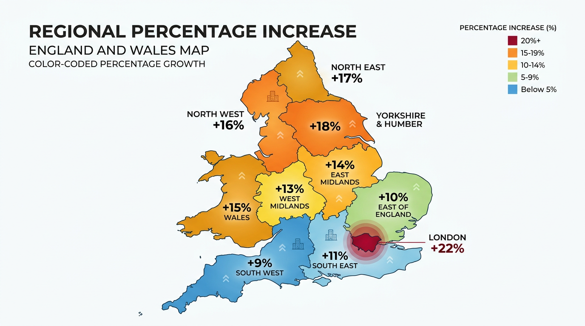

The numbers are in — and they're significant. The Valuation Office Agency published draft 2026 rateable values on 26 November 2025, and the picture they paint is one of the most consequential shifts in business rates liability in recent memory. Total rateable values across England and Wales are rising 19.2%, from £70.8 billion to £84.4 billion. For the 2.13 million properties on the rating list, April 2026 will mark a watershed moment.
Key takeaway: With an overall 10.2% increase in business rates revenue forecast — from £33.6bn to £37.1bn — most commercial property owners will see their bills change. Some sectors face steep increases; others will benefit from new permanent reliefs. The critical March 31, 2026 deadline to challenge your current valuation is fast approaching. Here’s what you need to know.
The Headline Numbers
The 2026 revaluation is based on open market rental values as of 1 April 2024 — a snapshot that captures two years of post-pandemic recovery, soaring warehouse demand, and a high street still finding its footing. The result is a significant redistribution of the national rates burden.
Here are the numbers that matter:
- Total rateable value: £70.8bn → £84.4bn (+19.2%)
- Total properties affected: 2.13 million
- Total business rates revenue: £33.6bn → £37.1bn (+10.2%)
- Government support package: £4.3 billion over three years
It is worth emphasising: revaluation is designed to redistribute the tax burden based on relative property value changes, not to raise additional revenue in itself. However, the simultaneous introduction of new multipliers means the overall yield will increase. The government has packaged £4.3 billion in transitional support to cushion the blow for those facing the steepest rises.
Regional Winners and Losers

The revaluation will hit different parts of the country with markedly different force. London, driven by continued demand for prime office and retail space, leads the pack:
- London: +22.3% — the capital's resilient commercial market pushes it to the top
- North West: +19.3% — Manchester's booming logistics and office markets are the primary driver
- Yorkshire & Humber: +18% — warehouse and distribution growth concentrated around major motorway corridors
- East Midlands: +14% — the "Golden Triangle" logistics hub continues to see strong rental growth
- South West: +9% — one of the more modest increases, reflecting slower rental growth
For landlords with portfolios spanning multiple regions, this creates a complex picture. A property owner with assets in both Manchester and the South West will see dramatically different impacts on their rates liabilities — and will need correspondingly different strategies for each.
Sector-by-Sector Impact
Industrial & Logistics: The Biggest Hit
Industrial properties face the steepest increases, with total rateable value leaping 21.1%. This reflects the extraordinary demand for warehouse and distribution space driven by the continued growth of e-commerce. Large fulfilment centres and last-mile delivery hubs in particular will see significant uplifts.
For owners of large industrial assets above the £500,000 RV threshold, the impact is compounded by the new high-value multiplier of 50.8p (2.8p above the standard rate). A mega-warehouse with a rateable value of £2 million, for example, could see its annual rates bill increase by tens of thousands of pounds.
Retail: A Mixed Picture
Retail sees a more nuanced outcome. While some prime retail locations have recovered well, many secondary and tertiary high street locations continue to struggle. The good news for retailers is the new permanent RHL multiplier structure, which offers a 5p discount per pound of rateable value compared to non-RHL properties — the first permanent structural tax reduction for the sector.
However, retailers losing the temporary 40% RHL relief (which expires 31 March 2026) may still face a net increase, even with the new lower multipliers. The transition from a 40% discount to a 5p multiplier reduction is not like-for-like, and some businesses — particularly those with rateable values between £51,000 and £200,000 — may find themselves paying more than they do today.
Office: Location-Dependent
The office sector reflects the ongoing debate about the future of work. Prime city-centre offices in London, Manchester and Birmingham have seen rental growth as employers invest in quality workspace to attract talent. However, secondary office stock — particularly older buildings without strong ESG credentials — has seen values stagnate or decline. The revaluation will sharpen this divide.
The £4.3 Billion Support Package
Recognising the scale of the transition, the government has assembled its largest-ever business rates support package:
- £3.2 billion Transitional Relief scheme — caps how much bills can increase year-on-year for larger ratepayers, phasing in big increases over multiple years
- £500+ million Supporting Small Business scheme — limits annual bill increases to £800 for small businesses losing their current relief
- £1.3 billion transition support — specifically for businesses moving from temporary RHL relief to the new permanent lower multipliers
- Pub and Live Music Venues Relief — an additional 15% relief on top of other reductions
- Extended Small Business Rates Relief grace period — increased from 1 to 3 years
These measures will soften the blow for many, but they won't eliminate it. Transitional relief, by its nature, delays increases rather than preventing them — businesses will still reach their full liability over time.
What This Means for Vacant Property Owners
For owners of vacant commercial properties, the revaluation creates an acute pressure point. Empty property rates liability is calculated on the same rateable values — so if your vacant unit's RV increases, your empty rates bill increases too, with no rental income to offset it.
Consider a vacant retail unit currently valued at £80,000 RV. If the 2026 revaluation pushes this to £95,000 — a modest 19% increase — the annual empty rates liability rises from approximately £38,400 to over £40,800 under the new standard multiplier (or £40,850 under the standard non-RHL rate of 43.0p). That's an additional £2,400 per year for a property generating zero income.
This is precisely why solutions like VacatAd's beneficial occupation model become even more valuable in a post-revaluation world. By establishing genuine, compliant occupation of vacant properties — through digital infrastructure providing free Wi-Fi and local advertising — owners can reset their Empty Property Relief eligibility and significantly reduce their rates exposure.
The March 31 Deadline: Act Now
Critical deadline: 31 March 2026 is the final date to challenge factual errors in the VOA's assumptions about your current property. After this date, errors in floor areas, layout, configuration, or use will carry into the 2026 valuation and cannot be corrected retrospectively. Any historic over-assessments not challenged by this date will become permanent, losing opportunities to claim refunds.
Before the deadline, you should:
- Check your draft 2026 rateable value using the government's Find a Business Rates Valuation service
- Compare your valuation against similar properties in your area
- Report any factual errors in the current valuation before March 31
- Raise check cases through the VOA's Check, Challenge, Appeal process
- Register for a business rates valuation account if you haven't already
- Appoint a specialist rating advisor if you believe your valuation is materially incorrect
Looking Ahead: What Happens Next
The final 2026 rating list takes effect on 1 April 2026. Between now and then, businesses should:
- Model their 2026/27 liability using the confirmed multipliers (Small Business RHL: 38.2p, Standard RHL: 43.0p, Small Business Non-RHL: 43.2p, Standard Non-RHL: 48.0p, High-value: 50.8p)
- Check eligibility for new reliefs — particularly RHL permanent relief, Pub & Live Music Venues Relief, and the Supporting Small Business scheme
- Review portfolio strategy for empty properties in light of increased void costs
- Engage with specialists who can navigate the new five-tier multiplier system
The 2026 revaluation is not just another administrative exercise. Combined with the new multiplier structure, it represents the most significant reshaping of the business rates system in a decade. The businesses that prepare now — checking their values, understanding their new liabilities, and taking strategic action on vacant properties — will be the ones best positioned to manage the transition.
If you'd like a personalised impact assessment for your property portfolio, or want to understand how VacatAd's beneficial occupation model can help mitigate increased void costs, get in touch with our team. We're helping landlords across the country prepare for April — and the sooner you start, the better positioned you'll be.